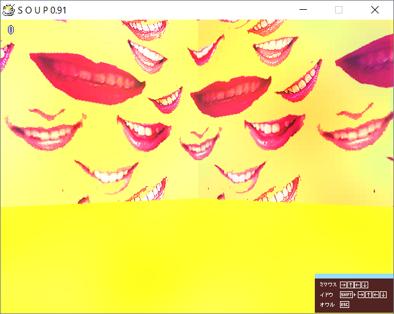

| Photo |  |
| Day | 3 |
| Internal Name | donroom6 |
| Creator | Yarhalla/Don |
| Prefix | don |
Mouth Room (donroom6) is a room accessible from Day 3. It was made by Yarhalla/Don.
The room is fully yellow, with the walls being occupied by numerous red tinted mouths.
This is one of the two rooms in the game to not have an object in the middle, second being Poem Room from the next day.
◄ Library Room (tarroom3) | Go back to Rooms | Poem Room (donroom5) ►